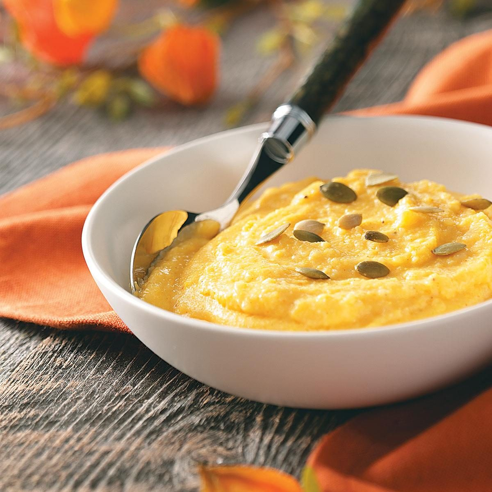

Polenta recipe

Basic Information
- Prep: 15 mins
- Cook: 35 mins
- Additional: 5 mins
- Total: 55 mins
- Servings: 4
Ingredients for 4 persons
- 4 cups water
- 1 teaspoon fine salt
- 1 cup polenta
- 3 tablespoons butter, divided
- ½ cup freshly grated parmigian Reggiano cheese plus more for garnish
- Optional: Tuna just add Tuna please!! It is sooo good
Directions:
- Step 1:Bring water and salt to a boil in a large saucepan;
pour polenta slowly into boiling water, whisking constantly until
all polenta is stirred in and there are no lumps.
- Step 2:Reduce heat to low and simmer, whisking often, until
polenta starts to thicken, about 5 minutes. Polenta mixture should
still be slightly loose. Cover and cook for 30 minutes, whisking
every 5 to 6 minutes. When polenta is too thick to whisk,
stir with a wooden spoon. Polenta is done when texture is
creamy and the individual grains are tender.
- Step 3:Turn off heat and gently stir 2 tablespoons butter
into polenta until butter partially melts; mix 1/2 cup Parmigiano-Reggiano
cheese into polenta until cheese has melted. Cover and let stand 5 minutes
to thicken; stir and taste for salt before transferring to a serving bowl.
Top polenta with remaining 1 tablespoon butter and about 1 tablespoon
freshly grated Parmigiano-Reggiano cheese for garnish.